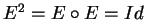
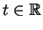
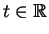
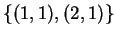
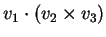
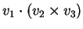
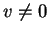
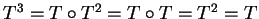

1) Estude se as afirmações a seguir são verdadeiras ou falsas. Justifique cuidadosamente sua resposta. Nos casos afirmativos encontre a matriz da transformação linear envolvida.
Resposta:

a) Falso. Uma rotação conserva módulos,
|R(u)|=|u| para todo vetor u. Mas
b)
Falso.
Um espelhamento verifica
.
No nosso caso,
c)
Falso.
Se P é uma projção ortogonal de
 dado qualquer vetor u sua imagem P(u)é paralela à reta de projeção r. Da primeira
condição,
P(1,1)=(1/2,-1/2),
obtemos que r=(t,-t),
.
Da segunda condição,
P(2,1)=(1/3,2/3), temos r=(t,2t),
o que é absurdo.
dado qualquer vetor u sua imagem P(u)é paralela à reta de projeção r. Da primeira
condição,
P(1,1)=(1/2,-1/2),
obtemos que r=(t,-t),
.
Da segunda condição,
P(2,1)=(1/3,2/3), temos r=(t,2t),
o que é absurdo.
d)
Falso.
A condição
E(1,1)=(1,1) implica que, se E fosse um espelhamento,
então a reta de projeção seria
(t,t),
.
A segunda condição, E(2,1)=(-2,-1), implica que (2,1) é um vetor normal à reta de espelhamento. Mas (2,1) não é ortogonal a (1,1).
e)
Verdadeiro.
Da condição
E(2,1)=(-1,-2) e de E(v)-v=n, n vetor normal à reta
de espelhamento, obtemos
f)
Falso.
Como

formam uma base de
 (os vetores não são paralelos) as imagens de (1,1) e
(2,1) determinam T. Se T fosse
linear,
(os vetores não são paralelos) as imagens de (1,1) e
(2,1) determinam T. Se T fosse
linear,
2)
Considere a transformação linear L,
 definida por
definida por
Resposta:
Observe que (1,1,1), (1,0,1) e (1,1,0)formam uma base, e portanto L está totalmente definida.
Para ver que os vetores formam uma base é suficiente calcular
o produto misto dos três vetores e ver que é não nulo
(ou seja, que os vetores não são coplanares),
a)
Observe que
b)
Do item (a) e como L(0,1,0) já esta
determinado (ou seja, conhecemos
L(1,0,0), L(0,1,0) e L(0,0,1))
temos
c)
Para calcular L(1,2,3),
d)
Para ver se L é inversível calcularemos
o determinante de L:
3)
Considere os vetores
Resposta:
a)
Para ver se os vetores formam uma base é suficiente ver se
são l.i., três vetores l.i. de
 formam
uma base. Para ver se são l.i. é suficiente calcular
seu produto misto
.
Se for 0 os
vetores são l.d., caso contrário são l.i.
formam
uma base. Para ver se são l.i. é suficiente calcular
seu produto misto
.
Se for 0 os
vetores são l.d., caso contrário são l.i.
b)
Observe que
c)
d)
A transformação não é inversível
pois existe ,
v=(1,1,1) que se transforma no vetor nulo.
Outra forma é ver que o determinante vale zero:
e)
A transformação linear representa a projeção no plano
paralelo a (1,1,0) e (0,1,1) que contém a origem
(isto é, x-y+z=0) segundo a direção (1,1,1).
Como toda projeção verifica T2=T.
Temos
.
E indutivamente T8=T.